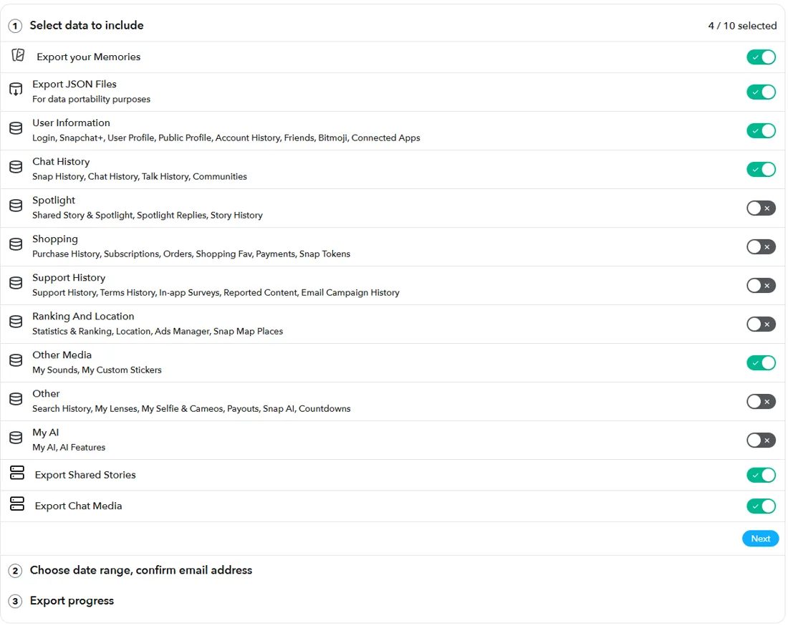
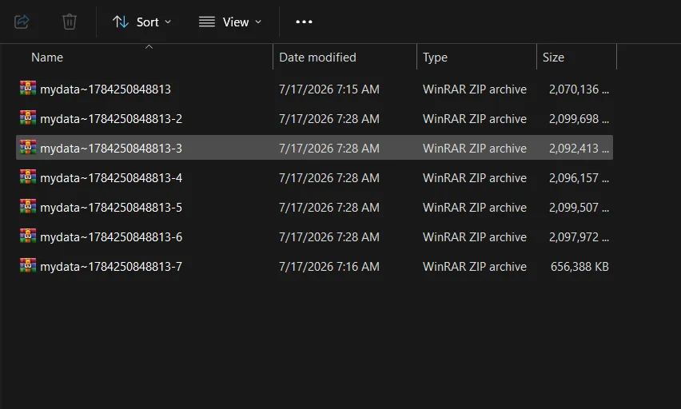
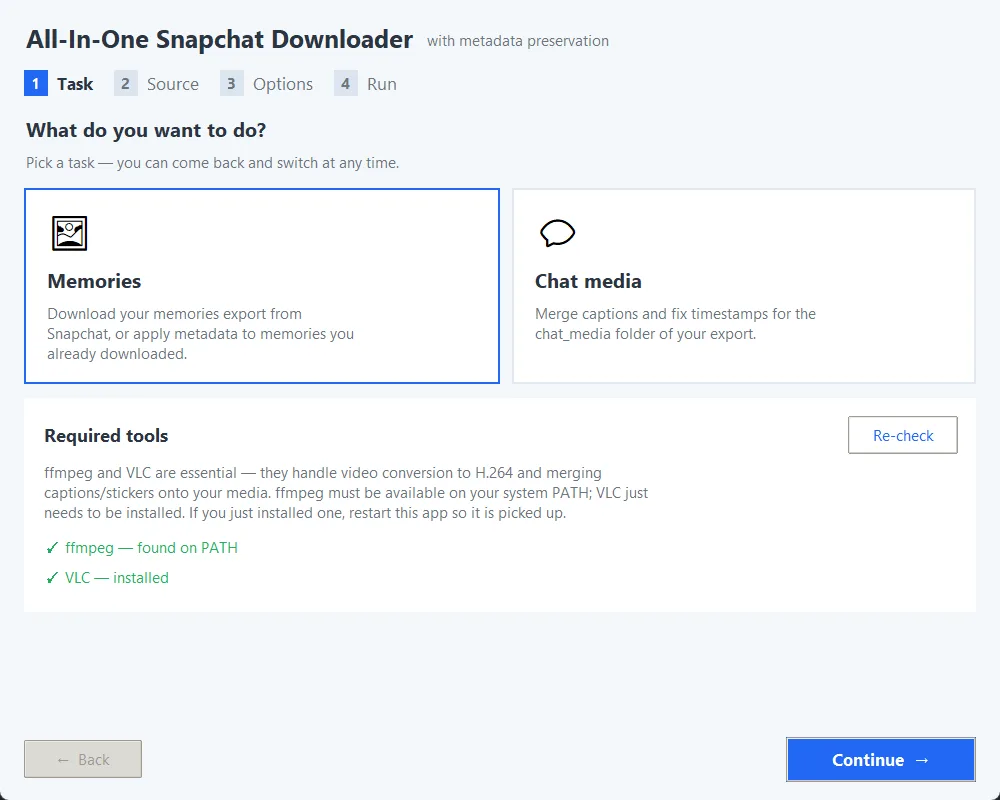
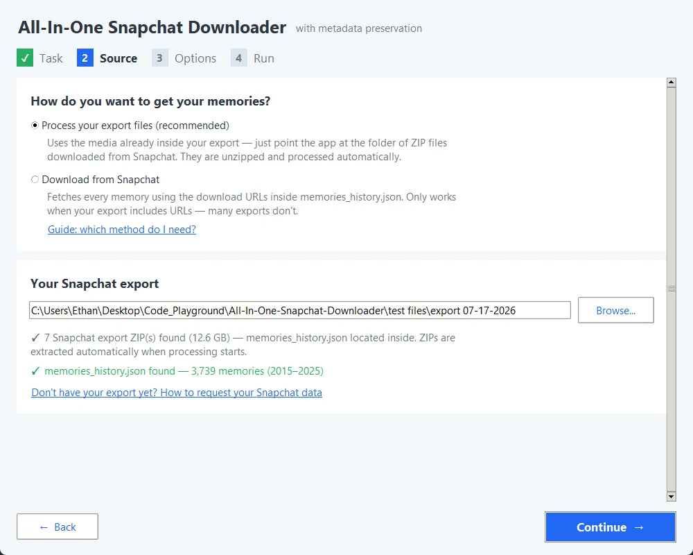
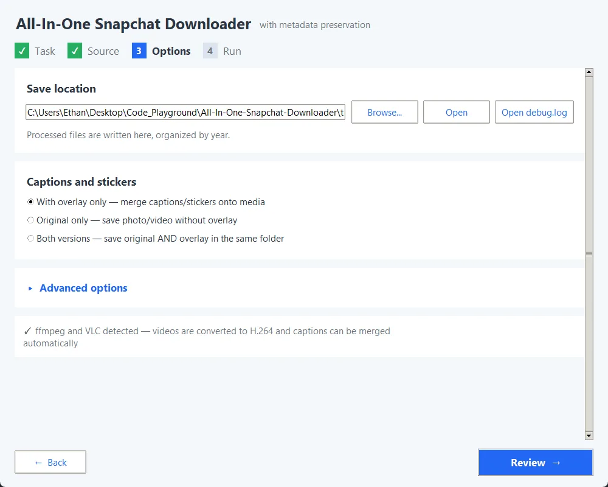
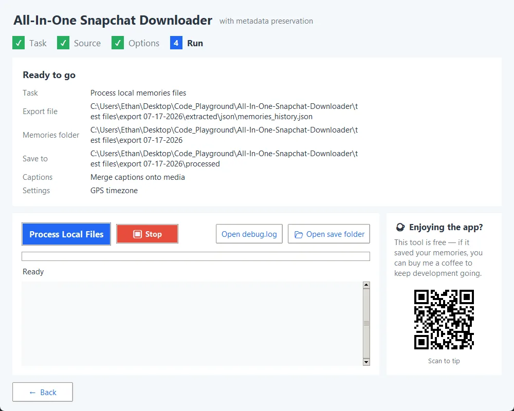
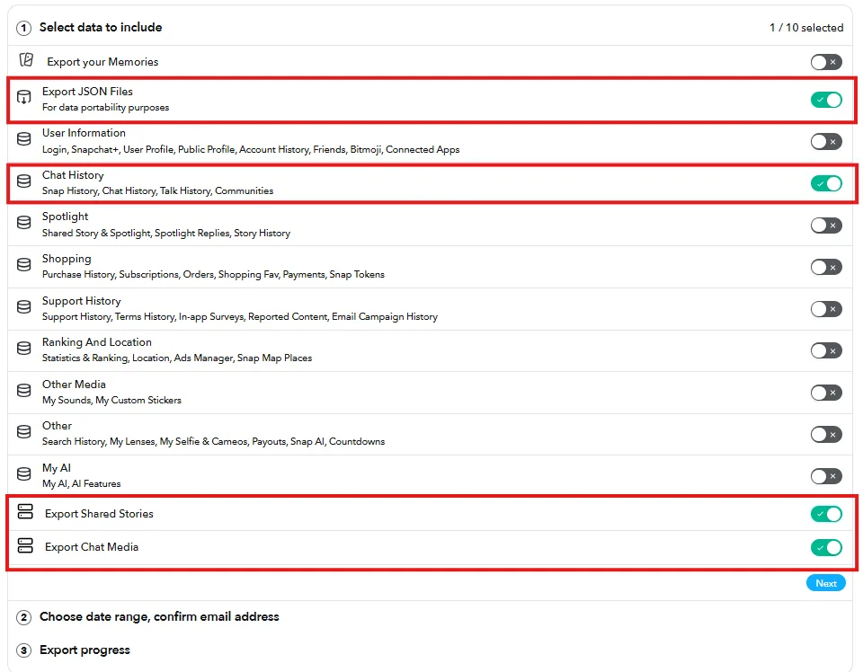

Task
Choose Memories or Chat media. The app also checks for FFmpeg and VLC, two free helpers for video. If either is missing, press Download for me.
A free app for Windows, macOS and Linux. It works on the data export Snapchat gives you, puts the right date and place on every photo and video, and never sends anything off your computer.
In Snapchat, go to Settings, then My Data. Snapchat takes 24 to 48 hours to prepare it. Exactly what to tick.
Big exports come in several mydata~…zip files. Put them all in one folder. Do not unzip anything.
Pick the folder, choose where to save, press go.
Download for WindowsWindows shows a blue "Windows protected your PC" screen? That happens with small free apps that are not code-signed. Choose More info, then Run anyway. If you would rather not run a downloaded file, you can build it from the source code, which is public.
The app is a desktop program. It does not run on phones or tablets. Run it on a computer, then copy the finished folder to your phone if you want the photos there.
Not sure which Mac you have? Open the Apple menu, choose About This Mac, and look at the chip. Each build only runs on its own kind of chip.
macOS asks about an unverified app? Right-click the app, choose Open, then Open again. You only need to do this once.
Linux: install Tkinter first if it is missing (sudo apt install python3-tk on Debian and Ubuntu). The Mac and Linux builds are early and need testers, so please tell us what you find.
Prefer a video? Watch the tutorial on YouTube. All files are also listed on the releases page.
Snapchat's export gives you files with scrambled names and no useful dates. This app turns them back into a library you can browse.


Choose Memories or Chat media. The app also checks for FFmpeg and VLC, two free helpers for video. If either is missing, press Download for me.

Select the folder of ZIP files. The app finds your memories list inside and tells you how many memories it found and which years they cover.

Choose where to save your files, then check the two settings that matter.

Review the plan and press start. ZIPs are unpacked first, then every memory is matched, captioned and dated. Stop at any time and run again later to continue. Open save folder shows your results.

Files are sorted into folders by date and named by when they were taken:
2024/
01 - January/
2024-01-15/
20240115_143022.jpg
Snapchat's export can include every photo and video saved in your chats. These come with scrambled names, no dates, and captions saved as separate see-through images. Choose Chat media on the first step and the app puts them back together.
When you request your data, turn on Export JSON Files, Chat History, Export Chat Media and (recommended) Export Shared Stories.

Two free tools the app uses for videos and captions. The app can install them for you with Download for me. Prefer to do it yourself? Copy a command.
winget install --exact --id Gyan.FFmpeg
winget install --exact --id VideoLAN.VLCbrew install ffmpeg
brew install --cask vlcsudo apt install -y ffmpeg
sudo apt install -y vlcNo. Downloading, merging captions and writing dates all happen on your computer. Nothing is sent to any server.
No. It is a desktop app for Windows, macOS and Linux. Run it on a computer, then copy the output folder to your phone.
This warning is common for free, open-source apps that are not code-signed. Choose More info, then Run anyway. If you prefer, build it yourself from the public source code.
Your export probably has no download links, or they expired after about 7 days. Check that you selected the folder holding your mydata~ ZIP files. Then keep Process your export files selected on the Source step. That mode does not need links.
That is a limit Snapchat puts on data requests. The app cannot change it. Wait out the cooldown and request again.
No. For memories you only need Memories and Export JSON Files. Chat media and shared stories are optional extras. Download links last about 7 days, so do not let an export sit for too long.
Yes. They are only used while processing. FFmpeg installed through Download for me lives in the app's own folder, so there is nothing else to uninstall.
That is usually down to how Snapchat stored them (older formats or encrypted media). The app cannot decode them.
Turn on Skip existing files and run it again. It continues where it left off. Very large exports can take several runs.
No. Duplicate checks only cover the app's own output folder. If you merge into an existing library, compare names and dates yourself.
When several memories were taken within a second or two of each other, a neighbour's time can be used. Dates are reliable. Exact times for closely timed files can be slightly off.
No. Point the app at the folder of ZIP files and it unpacks them itself.
Still stuck? Open an issue on GitHub and describe what you see.
The app is free and stays free. If it saved your memories, a tip helps keep it maintained.